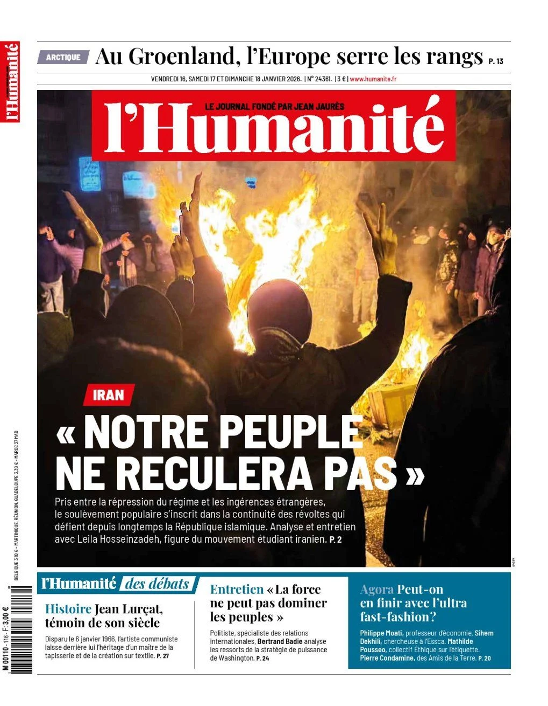

Entretien de L’Humanité
L’Humanité donne la parole à Leila Hosseinzadeh
Date indiquée par Facebook · 17 janvier 2026
Repères éditoriaux
L’Humanité donne la parole à Leila Hosseinzadeh, figure du mouvement étudiant iranien alors en exil en Allemagne. L’entretien a été annoncé en une de l’édition du week-end.
Texte conservé avec la publication
Ne manquez pas, dans l'Humanité de ce week-end, la grande interwiew de Leila Hosseinzadeh, figure du mouvement étudiant iranien, en exil en Allemagne.
Ne manquez pas, dans @[100064860845478:2048:l'Humanité] de ce week-end, la grande interwiew de Leila Hosseinzadeh, figure du mouvement étudiant iranien, en exil en Allemagne.

Sources
Archive rouge · export Facebook · AR-0002-FB-00901
À lire aussi · À Niort, notre appel à se rassembler en solidarité avec le peuple iranien